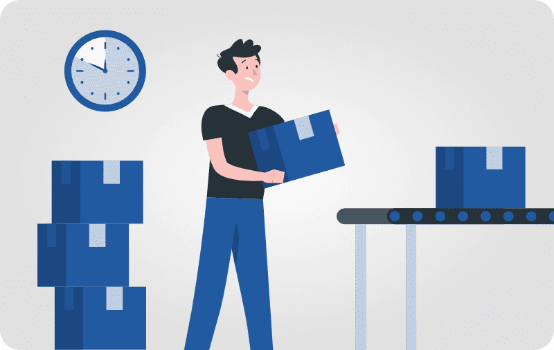

NIOSH
Outils d'évaluation de soulèvement et d'abaissement effectuées à deux mains, et notamment leur incidence sur le dos.
Voir l'outil →
Retrouvez des outils d'analyse en ergonomie sur une seule et même plateforme intuitive.
Gratuit, sans inscription, et prêt à l'emploi.
Venu des Réseaux et Télécommunications, j'ai bifurqué vers l'ergonomie pour mettre mes compétences techniques au service du bien-être au travail.
Convaincu que la connaissance doit circuler librement, je publie l'intégralité de mes travaux en open source.
Je ne suis ni un professionnel, ni un expert, autant en ergonomie qu'en programmation. Il va de soi que grâce à l'IA beaucoup de choses sont plus faciles à réaliser, mais il est important de comprendre ce que l'on demande pour pouvoir corriger et adapter aux besoins.
Le site web a été réalisé en partie par l'IA Claude et est hébergé sur GitHub, certaines images par Gemini et l'intégralité des codes revus et modifiés par ALB.

Outils d'évaluation de soulèvement et d'abaissement effectuées à deux mains, et notamment leur incidence sur le dos.
Voir l'outil →
Outil d'évaluation pour déterminer les poids et forces maximum acceptables par une majorité de la population sans inconfort.
Voir l'outil →Bientôt disponible...
Un projet en tête ? Une idée d'outil ? Je suis toujours partant pour en discuter.